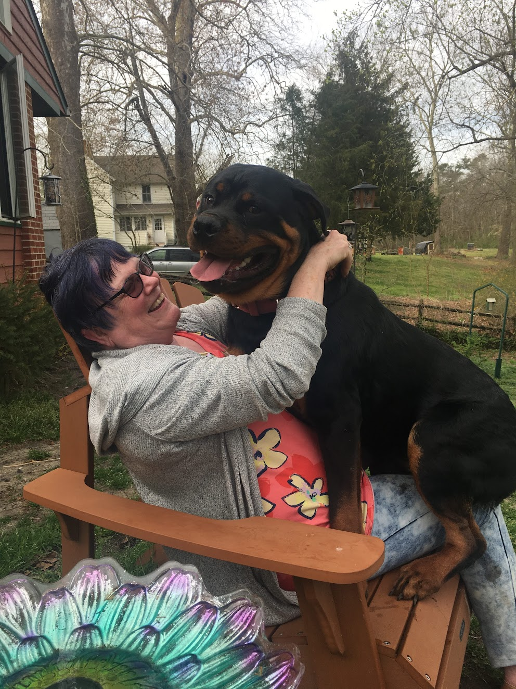

Welcome!
Welcome to Annie's Animals! I have been pet sitting for years and its what I do full time. Annie's Animals is my pet sitting website where you make appointments and leave feedback for me.
What I Do
When you hire me for pet sitting you can expect to either stay in your residence or to leave your pets with me while you are away. I can follow any routines or rules you may have and I will make sure your pets are cared and loved for as if they were my own family! If you want to book and appointment click here. If you have any questions or concerns please feel free to reach out here.
About Me!
My name is Annie Nichols and I was born in 1949. I have two wonderful children and live with a few pets of my own. I currently live in Maryland and do pet sitting here full time.
